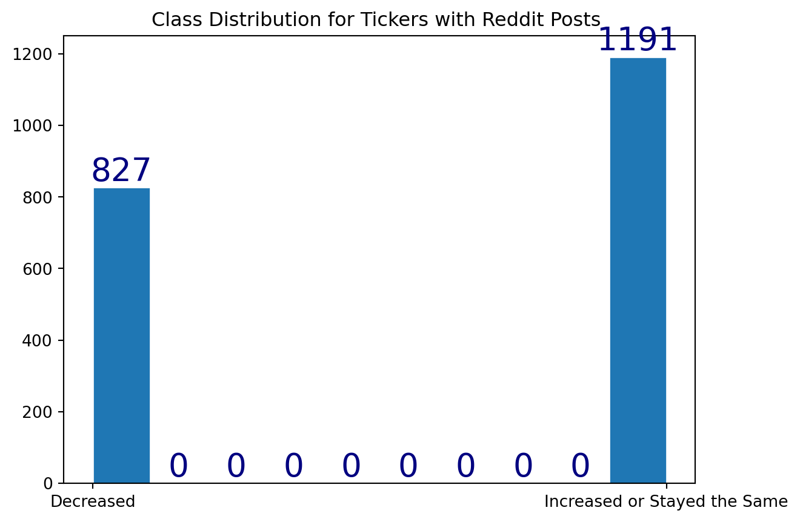
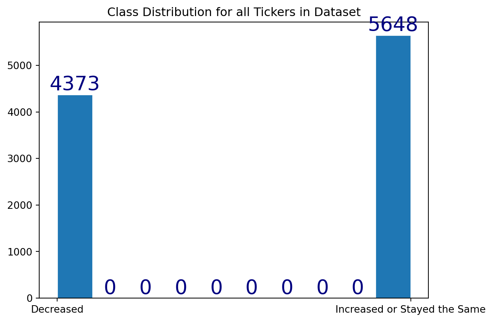
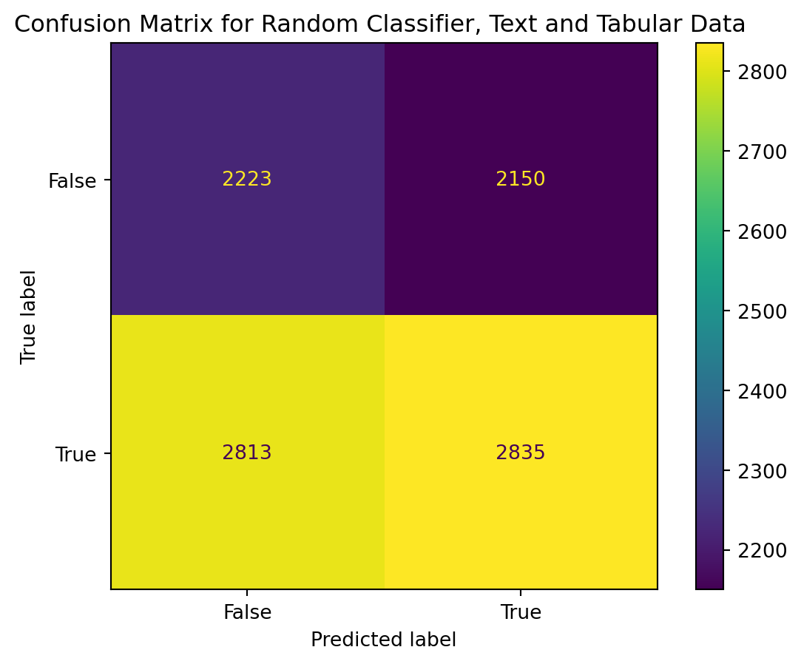
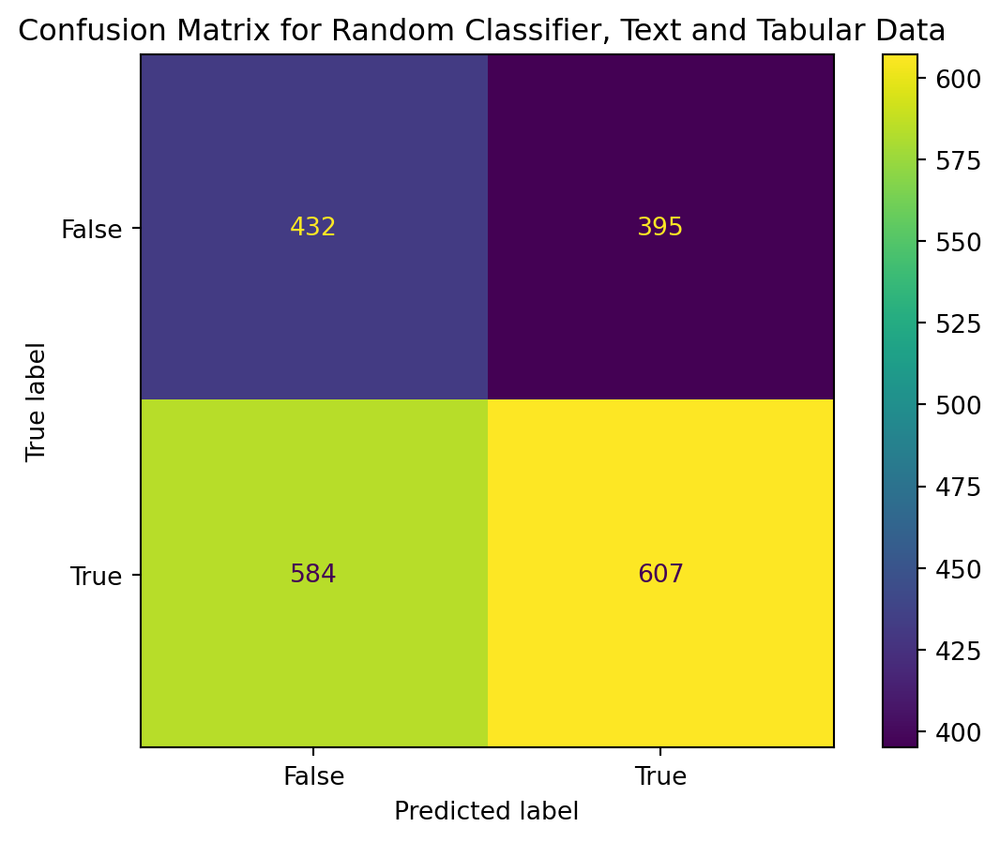
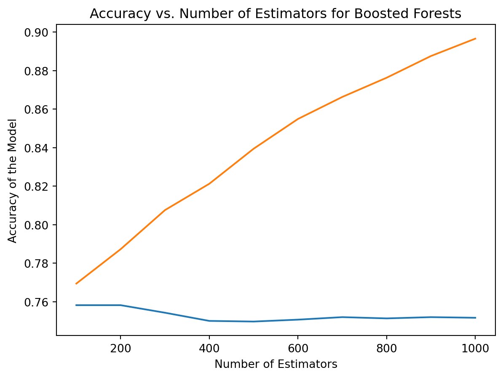

Random and boosted forests are some of the most pervasive machine learning methods today. For tabular data, these methods are extremely effective at identifying nonlinear relationships, as well as identifying which features in the input space are most important. I hope to use the excellent results promised by these methods to achieve real predictive power on my outcome variables (the direction and amount that retail activity changes on a given stock in a given day). To do this, I will try and predict these outcome variables using all of my tabular predictors. I have tabular data for all observations, but only some have complete data, and based on the selectiveness of the different models the number of viable observations range from ~8,000 to just 2000 in the dataset. For each of these models I will attempt to correctly classify which stocks increased or decreased in activity, which is the outcome variable/
I will start by creating a single decision tree as a baseline, and I will determine what accuracy this tree is able to achieve in classifying increases and decreases in activity. I will also fit a random classifier, so that I can compare my later models to a purely random result. After I have run this baseline both with and without the text data, I will run a random forest model. Based on the performance of this model, I will also try a boosted model, and then I will pick one of the two for which to optimize hyperparamters to get the best result.
Decision trees can work for problems like mine because they are exceptionally good at identifying nonlinear relationships in data. To understand how they work, imagine you are deciding between 20 new car models to buy. A decision tree is similar to how a human being might approach such a choice. In finding the best car to purchase, you might set a standard or threshold such as: “less than x amount of dollars to purchase.” This would eliminate some number of the cars. Then you would further ask for features such as “all wheel drive,” or “seatwarmers,” until eventually you had a car which was the closest to your true requirements. Decision trees are essentially a similar method as this anecdote, except they attempt to find the most efficient number of requirements you could specify to match a car to a given person (classification) or it’s most ideal pricepoint(regression). In mathematical terms, they try to reduce the entropy of the dataset by dividing it along meaningful and efficient boundaries (called nodes that divide the data into branches), until only small distinct groups are left (called leaves).
Class Distribution
Read in and clean data:
import jsonimport numpy as npimport matplotlib.pyplot as pltfrom sklearn.metrics import silhouette_samples, silhouette_scoreimport pandas as pdimport seaborn as snsimport ostabData = pd.read_csv("../data/01-modified-data/joinedSentiment.csv") tabData.shapetextData = pd.read_csv("../data/01-modified-data/vectorizedReddit.csv") tabData.shape
Class distribution for full (8,000) and reduced (2,000) datasets.
# Code to compute the class distributionxlocs = [0,1]xlabs = ["Decreased", "Increased or Stayed the Same"]temp = processed2.loc[:,'activityIncrease'].astype(str)temp2 = processed.loc[:,'activityIncrease'].astype(str)values, bins, bars = plt.hist(temp, edgecolor='white')plt.xticks(xlocs, xlabs)plt.bar_label(bars, fontsize=20, color='navy')plt.title("Class Distribution for Tickers with Reddit Posts ")plt.show()values, bins, bars = plt.hist(temp2, edgecolor='white')plt.xticks(xlocs, xlabs)plt.bar_label(bars, fontsize=20, color='navy')plt.title("Class Distribution for all Tickers in Dataset")plt.show()


Based on the plots, we can see that 827 stocks in the daily top 10 decreased in retail trader activity, while 1191 increased, for the data which had relevant reddit posts available. As a proportion, this is 0.41 of all the stocks in the top 10 with reddit posts. In the second plots, for all the tickers in the dataset, 4373 had a decrease, while 5648 had an increase. As a proportion, this is 0.44 out of all stocks in the top 10. It is worth noting that the outcome variable differs in proportion between the categories.
Baseline Model / Random Classifier
Now, let’s train a random classifier and a baseline decision tree on our two datasets, and visualize the tree that we construct. Starting with the random classifier:
from sklearn import metricsfrom sklearn.metrics import confusion_matriximport seaborn as snsfrom numpy import randomfrom sklearn.metrics import accuracy_scoreally = temp2.astype(int)texty = temp.astype(int)rand_ally = random.randint(2, size = ally.shape[0])rand_texty = random.randint(2, size = texty.shape[0])confusion_matrix = metrics.confusion_matrix(ally, rand_ally)cm_display = metrics.ConfusionMatrixDisplay(confusion_matrix = confusion_matrix, display_labels = [False, True])cm_display.plot()plt.title("Confusion Matrix for Random Classifier, Text and Tabular Data ")plt.show()print(accuracy_score(ally, rand_ally))confusion_matrix = metrics.confusion_matrix(texty, rand_texty)cm_display = metrics.ConfusionMatrixDisplay(confusion_matrix = confusion_matrix, display_labels = [False, True])cm_display.plot()plt.title("Confusion Matrix for Random Classifier, Text and Tabular Data ")plt.show()print(accuracy_score(texty, rand_texty))

0.5047400459036024
0.5148662041625371

Based on both the confusion matrices and the accuracy scores, we can see that the random classifier performs close to a coinflip, with 51% accuracy for the tabular data and 48% accuracy for the textual and tabular data combined. Now let’s evaluate a single decision tree:
First, we make sure we have train and validation data:
Our baseline tree obtains an impressive accuracy of 73.2% on the test set! Let’s see if it performs similarly well on the text data. First, we prepare the text train and test split:
Interestingly, on the tree with the text data added, we see much worse performance, around 63%. This could certainly be due to the lack of training data when limiting to only those stock posts with reddit texts available. Notably, however, several of the text columns did enter into the decision tree, suggesting the text data was not completely meaningless. Let’s see if we can get better performance by implementing bagging and random forests.
In a Jupyter environment, please rerun this cell to show the HTML representation or trust the notebook. On GitHub, the HTML representation is unable to render, please try loading this page with nbviewer.org.
Out random forest classifier has only produced an accuracy of 73.5%, which is barely better than our naive decision tree. Let’s try a gradient boosted classifier and see if it performs better:
from sklearn.ensemble import GradientBoostingClassifiergbc = GradientBoostingClassifier(n_estimators =1000, random_state =42)gbc.fit(tree_trainx, tree_trainy)
In a Jupyter environment, please rerun this cell to show the HTML representation or trust the notebook. On GitHub, the HTML representation is unable to render, please try loading this page with nbviewer.org.
Surprisingly, the gradient boosted classifier did worse, if anything, than the random forests. Let’s try to select the optimal n_estimators hyperparameter and see if that helps our performance (I will use acccuracy scores for the plot)
plt.plot(nestimators, test_accuracy,label='Test Accuracy' )plt.plot(nestimators, train_accuracy,label='Train Accuracy' )plt.xlabel("Number of Estimators")plt.ylabel("Accuracy of the Model")plt.title("Accuracy vs. Number of Estimators for Boosted Forests")
Text(0.5, 1.0, 'Accuracy vs. Number of Estimators for Boosted Forests')

Viewing the hyperparameter chart, it seems clear that a smaller number of estimators, close to 100, actually leads to the best performance on the test set. Likely this is the consequence of overfitting. Regardless, the ideal parameter choice is clear as the best model is also the simplest, and leads to an accuracy of almost 75%, the best of any model to date.
Overall, the boosted forest model was the best performing out of the 1) simple decision tree 2) random forest and 3) boosted models. This also clearly outperformed a random baseline, and was most robust with 100 estimators included in the model. The boosted forest forest model performs very well (for a financial model) at 74.7% accuracy. This provides a remarkable picture of what drives investor activity in individual stocks, although it may not be the complete picture still. To understand what features the model uses to predict with accuracy, let’s trace one sample pathway through one component tree of the boosted model:
Looking at the final tree above (one of many in the classifier, but chosen to illustrate the internal relationships that power the mode). The features, going down the tree are: First a split based on current investor activity in the stock, if it is lower than 0.043 then the model check whether the spread in investor sentiment (bearish bullish) is wider than -0.33, which would indicate a bearish environment. Then, the model would predict based on investor activity in the stock.
Reviewing this example, it appears the model is very interested in the sentiment of investors in the survey, particularly bearish sentiment, as well as the activity of retail investors in a stock on the current day.
Concerns: One concern I have is that the amount of data is somewhat small <3000 by the end for the random forests given excluded NA values. This is a concern because it allows models such as decision trees to overfit, and this is shown in the random forest having almost perfect accuracy in the training set, but no improvements in the test set with more estimators. I am also concerned that the CURRENT investor activity index is being used to predict the change for the next day, as this worries me that there is some conflation in the acitivty day over day. I would be curious to confirm how all of the data is defined, to ensure we are actually predicting the future without having more information than is realistic in real time.
Future directions: I would like to incorporate the text data as well, to make the predictions even more robust.